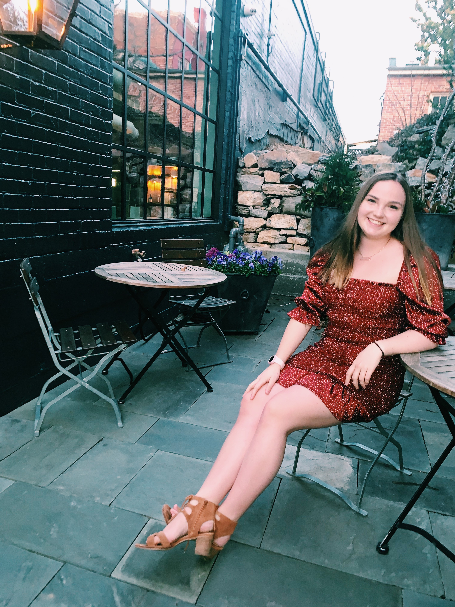

A Little About Me - Katherine Davis

Hello! My name is Katherine Davis and I am a senior at Washington and Lee University in Lexington, VA. I am a biology major on the pre-medicine track. I intend to go to medical school after taking a gap year to get more hands-on experience in the medical field through research and nurse assisting.
Here are links to my professional page and resume:
I am interested in the medical field because of my own experience with having Type One Diabetes. I have medical professionals in my life who have cared for me and provided me outstanding care and support. I want to be able to help people the way my doctors, nurses, and educators have helped me through my own diagnosis and life. Everyone deserves access to medical care and I intend to go into primary care medicine to ensure people from all walks of life have access to life-changing and life-saving medical treatment.